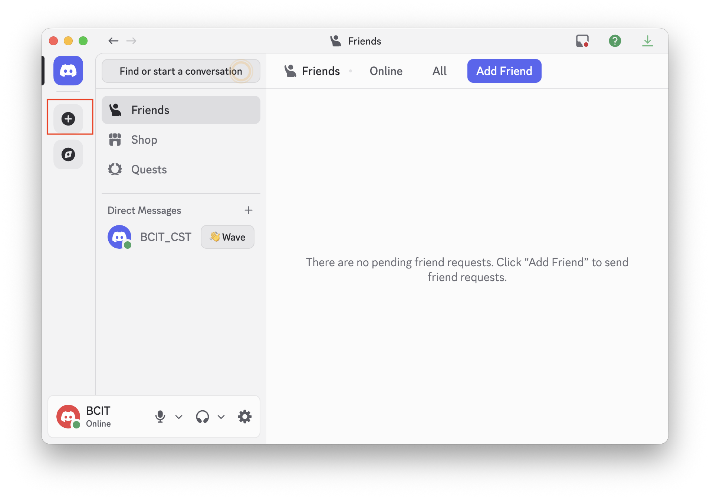
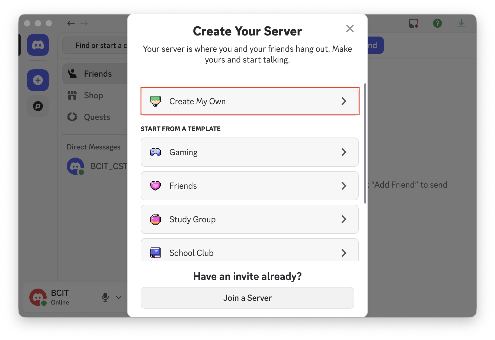
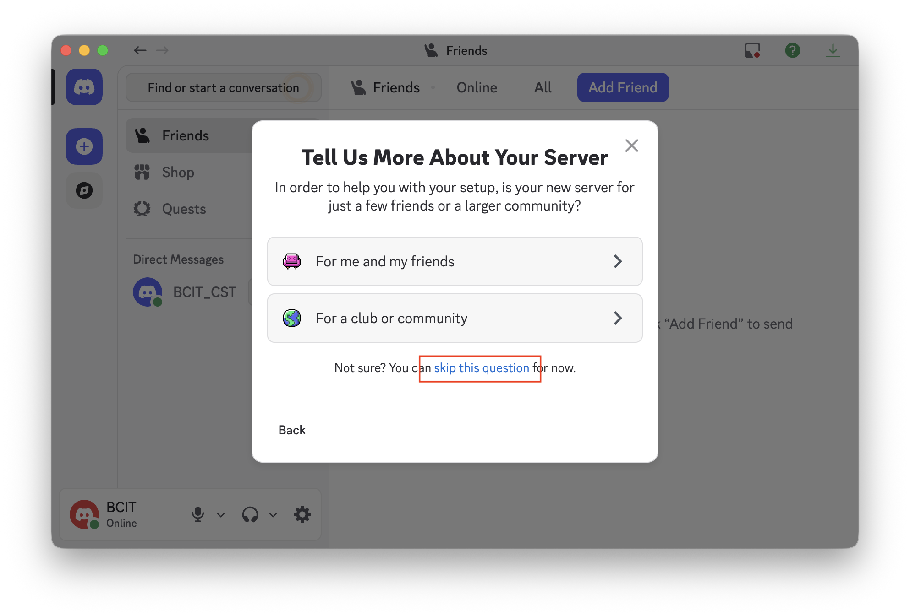
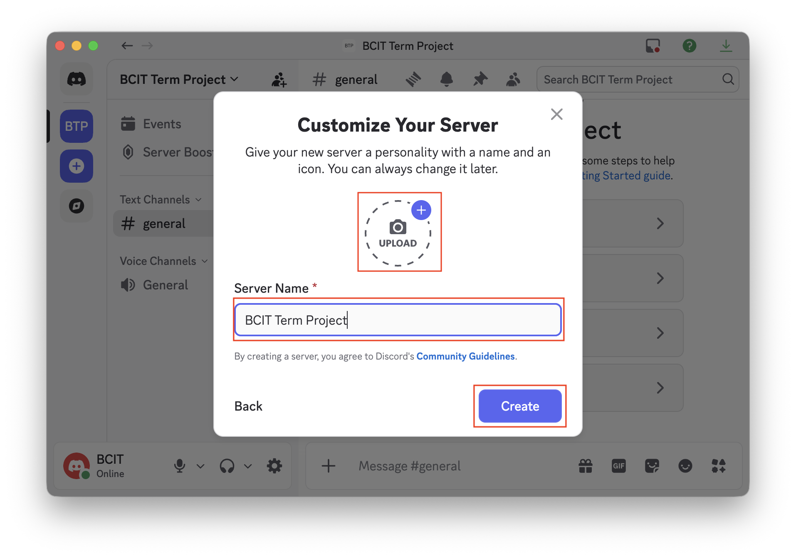
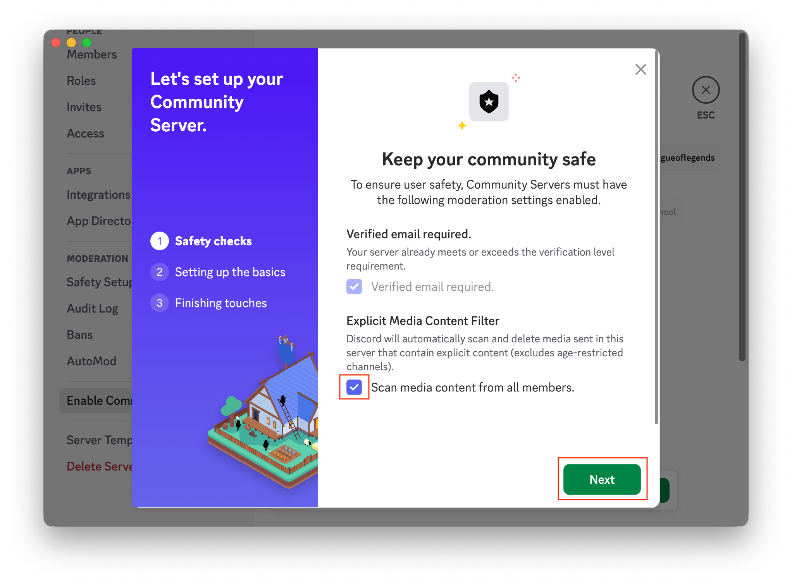
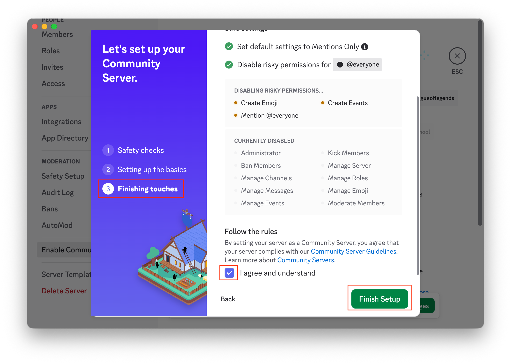
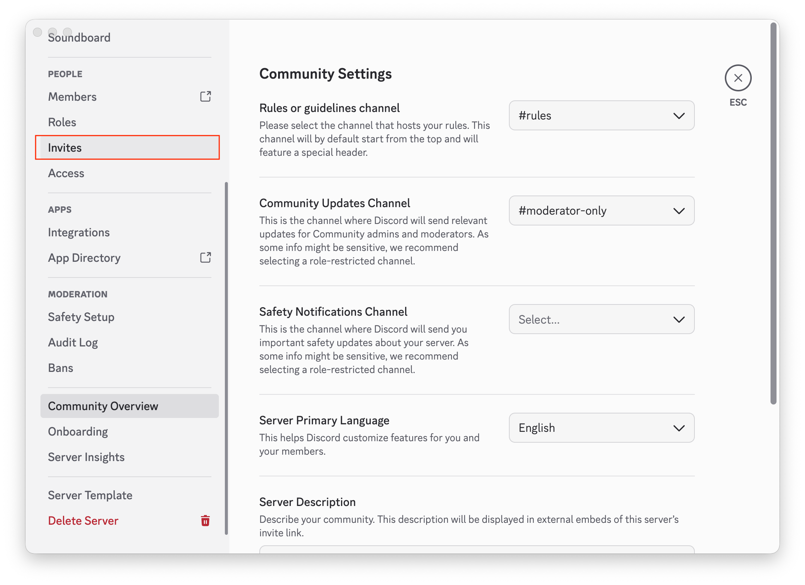
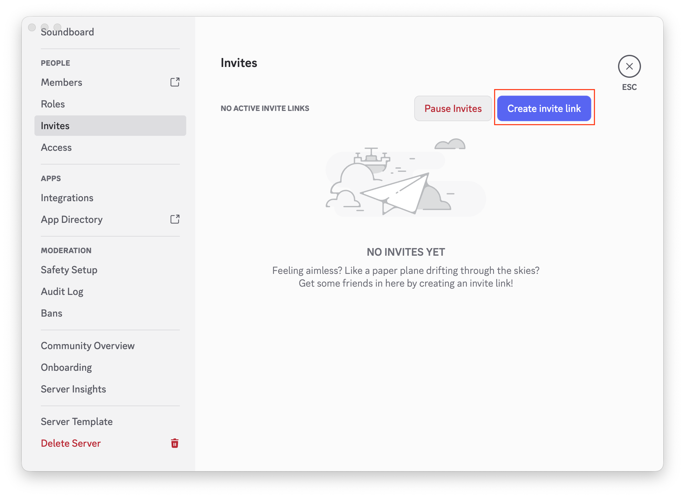
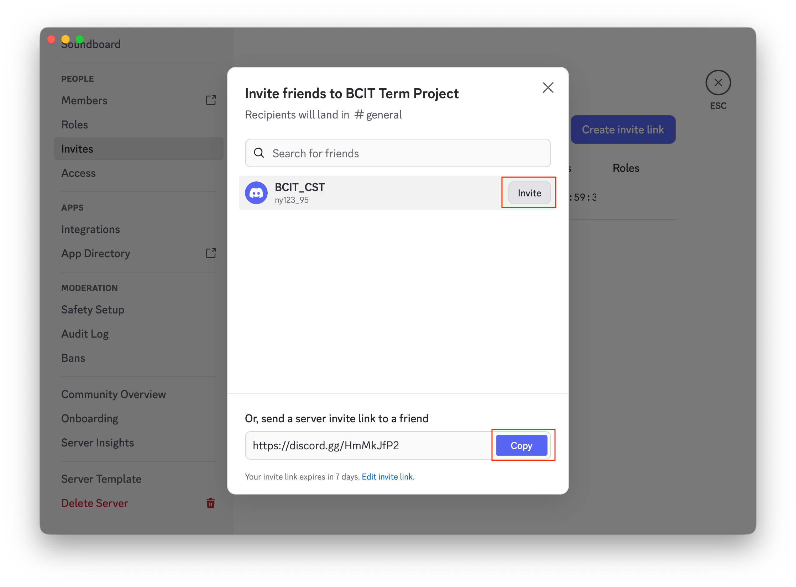

Create and Configure a Discord Server
Introduction
In this section, you will configure the server-level settings your team depends on: server name, privacy/safety options, and invite access.
A properly configured server creates a stable foundation for collaboration before channels and meetings are set up.
Prerequisites
- You have a Discord account and are signed in.
- You are using the Discord desktop app or web version.
- Your team size is 3–10 members.
Note
This setup is optimized for private team collaboration, not public community servers. Public community servers require stricter safety and moderation configuration.
Recommended Configuration (3–10 Member Team)
- Default Notifications: Only @mentions
- Invite Expiration: 7 days
- Invite Max Uses: 10–20
- Safety Filters: Enabled
Setup Steps
-
Open Discord and Click [+ (Add a Server)].

-
Select [Create My Own] and Choose the server type.
Why: This creates a custom server suited to your team’s use case.

-
Choose the server purpose. If you are unsure, you can skip this question.

-
Type a clear server name and optionally add an icon, then Click [Create].
Why: A clear name helps teammates identify the correct server quickly.

-
Open the server dropdown and Click [Server Settings].
Why: All core configuration options are managed in [Server Settings].

The dropdown menu should appear as shown below.

-
In [Server Settings], scroll to the bottom of the left sidebar and Click [Enable Community]. On the right side, Click [Enable Community] again to start setup.
Why: Community setup enables useful management and baseline safety features.

-
In [Community Setup], complete [Safety Checks], Check [Scan media content from all members], then Click [Next].
Why: These filters reduce inappropriate content and keep the collaboration space clean.

-
In [Community Setup], Discord may auto-skip [Setting Up the Basics] by applying defaults (for example, Mentions Only notifications and disabling risky permissions for @everyone). When you reach [Finish Touches], Check [I agree and understand], then Click [Finish Setup].
Why: This reduces notification overload while preserving important alerts.

-
After setup completes, you may hear a Discord notification sound. This is normal; you can review notifications later. Then Click [Invites] in the left sidebar.

-
In [Invites], find [Create Invite Link] on the right side and Click it.

-
In the pop-up window, choose one option:
- Click [Invite] to let Discord send an invite directly.
- Click [Copy] to copy the invite link and send it manually to your teammate.

Success
Core server setup is complete and ready for your next tasks.
Conclusion
Your Discord server is now configured for team collaboration with appropriate identity, safety, notification, and invite settings for a 3–10 member team.